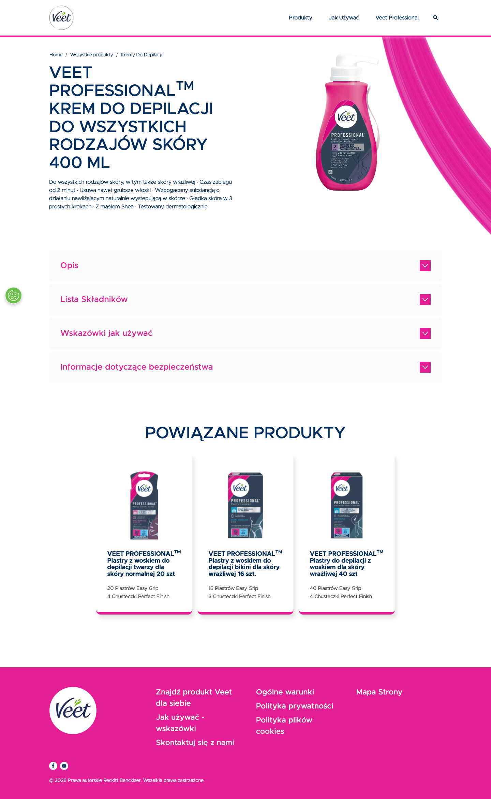

| LP | Etykieta (jak jest) | Typ / rola obiektu | Zawartość / akcje | Obserwacje (→ baza) | P | Pozycja |
|---|---|---|---|---|---|---|
| 1 | Veet | Header / nawigacja | Logo Veet (zielono-białe), menu (Produkty, Jak depilować, Twoja skóra, Porady, FAQ), ikony wyszukiwania. | Zielone logo Veet na białym tle; menu brand-site (nie e-commerce); brak ikony koszyka — brand site bez sklepu; nawigacja edukacyjna (Porady, Jak depilować) zamiast kategorii produktowych. | – | above fold 0px |
| 2 | Produkty / Kremy / Professional | Breadcrumbs | Ścieżka: Strona główna / Produkty / Kremy do depilacji / Veet Professional. | PL breadcrumbs; strukturalizacja pod "Kremy do depilacji" (kategoria); "Professional" jako pod-tier. | – | above fold 60px |
| 3 | [packshot FMCG] | Galeria packshot | Zdjęcia opakowania produktu — tuba/butelka kremu na białym tle. Widok przód i tył. | FMCG packshot — zdjęcia opakowania (tuby), nie urządzenia; białe tło; widok frontu + tyłu z etykietą; brak zdjęć lifestyle czy modeli; styl: katalog produktowy, nie aspiracyjny. | – | above fold 100px |
| 4 | Veet Professional — Krem do depilacji do wszystkich rodzajów skóry 400 ml | Tytuł produktu (H1) | H1 z brand + tier + opis + pojemność. | Długi opisowy tytuł; "Professional" = tier jakościowy; "do wszystkich rodzajów skóry" = szeroki claim; "400 ml" = wartość/size w nazwie; format FMCG (brand + opis użycia + rozmiar); brak benefit "bezbolesny" w tytule. | – | above fold 100px |
| 5 | Delikatna formuła / 3 minuty wystarczą | Opis krótki / key claims | Krótki tekst z kluczowymi claimami produktu pod tytułem. | 3-4 zdania lub bullets; "3 minuty wystarczą" jako UTP czasowy; "delikatna formuła" jako kontra dla szkodliwości; brak ceny (brand site nie sprzedaje direct); claims aspiracyjne. | – | above fold 140px |
| 6 | Gdzie kupić / Kup teraz | CTA "Gdzie kupić" — retailer_redirect_cta | Przycisk/link otwierający listę sprzedawców: Rossmann, Hebe, Allegro, Biedronka, Drogerie.pl itp. | Zielony przycisk "Gdzie kupić" lub "Kup teraz"; brak koszyka na stronie; po kliknięciu: lista retailerów z linkami; model FMCG brand site — Reckitt nie sprzedaje direct w PL; shopper musi przejść do Rossmann/Hebe/Allegro; jeden click więcej vs GLOV/Malowidło. | – | above fold 200px |
| 7 | Jak używać w 3 krokach | Instrukcja użycia / kroki | Sekcja "Jak używać" — 3 kroki: Nanieś / Odczekaj / Usuń szpatułką. | Numerowane kroki 1-2-3; ikony lub piktogramy per krok; czas: 3-10 minut (zależy od strefy); tekst instruktażowy; tło kolorowe (zielone Veet lub białe); kluczowe dla edukacji nowych użytkowników kremów depilacyjnych. | – | scroll 1 360px |
| 8 | Kluczowe korzyści | Sekcja korzyści / USP grid | Grid 3-4 ikon z opisami korzyści — delikatna skóra po, 3 min, do wszystkich stref ciała, bez bólu. | Ikony zielone Veet; krótkie teksty per ikona; tło białe lub jasnozielone; benefit-focused; "bez bólu" jako claim — rywalizacja z epilatorami elektrycznymi (Braun). | – | scroll 1 560px |
| 9 | Składniki / INCI | Lista składników — inci_ingredients_block | Pełna lista składników INCI produktu — wymagana prawnie dla kosmetyków. | Lista INCI w małej czcionce; format: "Aqua, Calcium Thioglycolate..."; wymagana prawnie; nieatrakcyjna wizualnie ale niezbędna; specyfika kremów (nieobecna u GLOV/Braun); shopper niezainteresowany typowo. | – | scroll 1 760px |
| 10 | Środki ostrożności / Ostrzeżenia | Blok ostrzeżeń — regulatory_warning_block | Blok ostrzeżeń bezpieczeństwa — nie stosować na twarz/okolice intymne, test skórny przed użyciem, unikać kontaktu z oczami. | Tekst czarny lub na żółtym/czerwonym tle ostrzegawczym; wymagany regulatoryjnie dla thioglycolate; duży blok tekstu; nieobecny u GLOV/Braun — urządzenia mechaniczne nie wymagają; wzmacnia postrzegane ryzyko chemikaliów. | – | scroll 2 950px |
| 11 | Najczęściej zadawane pytania | FAQ / akordeony | Sekcja FAQ z rozwijalnymi pytaniami — kiedy efekty, dla jakiej skóry, jak często stosować. | Akordeony; pytania: zastosowanie, bezpieczeństwo, efekty, czas; tło białe; typowy edukacyjny element brand site; obsługuje obawy user pre-purchase; brak FAQ na GLOV.co PDP. | – | scroll 2 1150px |
| 12 | Inne produkty Veet | Cross-sell / brand range | Karuzela lub grid innych produktów Veet — inne kremy, żele, zestawy. | Kafelki produktów Veet; linkuje do PDP innych wariantów; brak CTA "Kup teraz" na kartach (brand site); podtrzymanie w ekosystemie Veet; brak produktów partnerów/konkurencji. | – | scroll 3+ 1400px |
| LP | Etykieta | Typ | Selektor | Tracking | GTM | Dev notes |
|---|---|---|---|---|---|---|
| 6 | Gdzie kupić | a.retailer-cta | .buy-now-cta, .where-to-buy button |
click event | GA4: click, category=where_to_buy | Kliknięcie śledzone GA4/GTM jako event; otwiera modal lub nową stronę z listą retailerów; Reckitt global tracking via GTM. |
| LP | Etykieta | Typ | Komentarz strategiczny |
|---|---|---|---|
| 6 | Gdzie kupić | retailer_redirect_cta | KLUCZOWA RÓŻNICA MODELU: Veet = brand site bez sklepu → 2 kliki więcej do zakupu niż GLOV/Malowidło. Shopper musi: (1) kliknąć "Gdzie kupić" → (2) wybrać retailera → (3) iść do innej strony → (4) kupić. Tarcie zakupowe x4 vs GLOV add_to_cart. Kompensowane masową dystrybucją offline. |
| 10 | Ostrzeżenia | regulatory_warning_block | INSIGHT konkurencyjny: duży blok ostrzeżeń chemicznych to implicite argument ZA GLOV/epilatorami mechanicznymi. "Bez chemii" GLOV jako antyteza. Veet musi te ostrzeżenia pokazywać (prawo) — GLOV nie musi (urządzenie). Asymetria prawna = szansa copywritingowa dla GLOV. |
